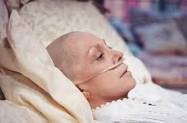
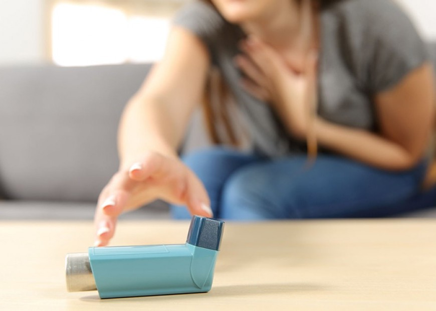
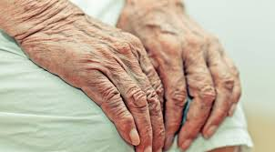
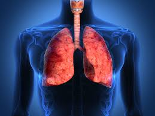
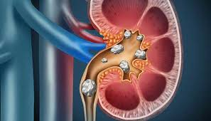

| S.no |
Disease |
Refer img |
Symptoms |
Treatment |
Prevent |
| 1 |
Cancer |
 |
- Bladder changes
- Bleeding or bruising
- Cough or hoarseness
- Eating problems
- Fatigue that is severe and lasts.
|
|
- Don't use tobacco. Using any type of tobacco
puts you on a collision course with cancer
- Eat a healthy diet
- Protect yourself from the sun
- Avoid risky behaviors
|
| 2 |
Stroke |
 |
- Sudden Numbness
- Sudden Confusion
- Sudden Trouble Seeing
- Sudden Trouble Walking
- Sudden Severe Headache
|
|
- Diet
- Lose weight
- Cut down on alcohol
- Exercise more
- Stop Smoking
|
| 3 |
wheezing |
 |
- Trouble breathing
- Cough
- Chest pain
- Swelling in the face, mouth or neck.
|
|
- Drink warm liquids
- Eat more fruits and vegetables.
- Quit smoking
- Don't exercise in cold, dry weather
|
| 4 |
HIV and Aids |
 |
- Fever (raised temperature)
- Sore throat
- Headache
- Joint aches and pains
- muscle pain
|
|
- Avoid sharing needles or other drug paraphernalia
- post-exposure prophylaxis (PEP)
- pre-exposure prophylaxis (PrEP).
|
| 5 |
COPD (chronic obstructive pulmonary disease) |
 |
- shortness of breath
- wheezing
- chest tightness
- frequent colds, flu, or other respiratory infections
- swelling of the feet, ankles, or legs
- weight loss
|
|
- Hand washing
- Keep breathing equipment clean.
- Diet
|
| 6 |
Kidney Stone |
 |
- Pain while urinating
- Blood in your urine
- Sharp pain in your back or lower abdomen
- Nausea and vomiting
|
|
- Eat less sodium
- Eat fewer oxalate-rich foods
- Eat less animal protein
- Avoid vitamin C supplements
- Explore herbal remedies.
|